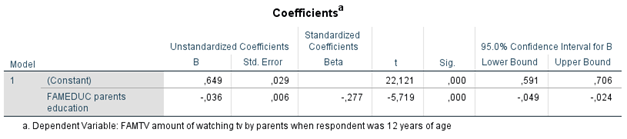

Metainformation
| Tag | Value |
|---|---|
| file | Inferential_Statistics_vufsw-mediation-1367-nl_vufsw-mediation-1367-nl |
| name | vufsw-mediation-1367-nl |
| section | inferential statistics/regression/multiple linear regression/mediation |
| type | string |
| solution | -0.008 |
| Type | interpreting output |
| Program | calculator |
| Language | dutch |
| Level | statistical thinking |
Question
Onderstaande analyses zijn uitgevoerd op data van een steekproef van
jong volwassenen tussen 20 en 40 jaar die zijn ondervraagd via een
vragenlijst waarin naar hun culturele voorkeuren is gevraagd. De
onderzoeksvragen zijn (1) in hoeverre de hoeveelheid televisiekijken
(variabele: TVKIJKEN (schaal 0-1): een hogere score betekent dat meer tv
gekeken wordt) veroorzaakt wordt door de sociale positie van het
ouderlijk milieu (gemeten is de opleiding van de ouders (variabele:
FAMEDUC (schaal 0-7), variërend van primair onderwijs (0) tot
universiteit (7) een hogere score betekent een hogere opleiding) en (2)
of deze relatie verklaard kan worden door de mate waarin vroeger (toen
de respondent 12 jaar was) door de ouders televisie gekeken werd
(variabele: FAMTV (schaal 0-1), een hogere score betekent dat meer tv
gekeken werd).
Hieronder staan de resultaten van twee regressieanalyses.
Regressie 1:

Regressie 2:

Wat is het indirecte effect (mediation effect) van ‘fameduc’ via ‘famtv’ op ‘tvwatching’? Geef alleen een getal in drie decimalen, verder niets.
Solution
-0.008